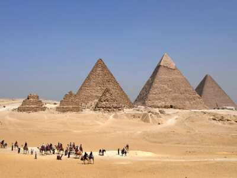
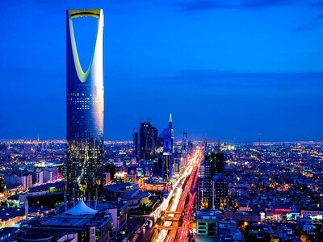
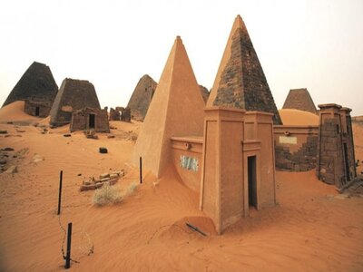

Written by: Abhishek Sharma
(its_abhishek)
Written by: Abhishek Sharma
(its_abhishek)Updated: 20th September 2019 at 10:24

Best Times to Visit
During the winter months (November - March), the weather are cooler with temperatures between 15'C and 25'C. This is normaly tourist season in Dubai, so places will be more crowded and prices will be slightly higher. But in summer (June - August), the average temperature is about 40'C.
Getting Around
Just like any major city and tourist area, there is a lot of traffic and rush hour in Dubai. The work week in Dubai is Sunday through Thursday. Their weekend days are Friday and Saturday. This affects the time it takes to get from one location to the next. Traffic is much lighter on the weekends.
Most people were fluent in English and all signs were in both Arabic and English, making it very easy to navigate.
Clothing Attire
Tourists wear regular clothes. The only time conservative clothing was really required was when I visited the Grand Mosque in Abu Dhabi. I expect that would be the same when visiting any mosque.
You are also expected to have on closed-toe shoes with pants or long skirts for ladies with your shoulders covered while dining in restaurants in Burj Khalifa and Burj Al Arab.
Food
Dubai is known for multicultural cuisine but anything you are want to eat you can find. I was excited to try authentic Middle Eastern dishes. There is a heavy Asian, including Indian, influence to the food in Dubai, which I noticed while having brunch at Saffron at the Atlantis resort.
Since this is a Muslim region, do not expect to find pork in the restaurants. However, there is plenty of seafood, lamb, beef and chicken. Popular dishes include shawarma (sliced meat like a kebab), hummus, curried dishes, basmati rice and marinated whole fish. Dates are also very popular. They come in many varieties and you will find date markets and fancy date shops in the malls.
 Written by: Forum Desai
(forumd1999)
Written by: Forum Desai
(forumd1999)Made up of 16 countries, the Middle East is probably the least-traveled region in the world, due to decades of wars and turmoil. However, there are amazing destinations for travelers throughout. Here are some of the places I visited while I was there:
Egypt
The last remaining wonder of the ancient world; for nearly 4000 years. The extraordinary shape, impeccable geometry and sheer bulk of the Giza Pyramids. Built as massive tombs on the orders of the pharaohs, they were constructed by teams of workers tens-of-thousands strong. Today, they stand as an awe-inspiring tribute to the might, organisation and achievements of ancient Egypt.
Most visitors will make a journey straight to the four most famous sights; the Great Pyramid of Khufu, the Pyramid of Khafre, the Pyramid of Menkaure and the Sphinx. But for those who want to explore further, the desert plateau surrounding the pyramids is littered with tombs, temple ruins and smaller satellite pyramids.

Saudi Arabia
If there is a final frontier of tourism left, it's Saudi Arabia. The birthplace and spiritual home of Islam, Saudi Arabia is rich in attractions and stirring symbolism. For Muslims, the cities of Mecca and Medina, rich in Prophetic significance, have no equal, while the carved temples of Madain Saleh, known as the second Petra, and the sophisticated rock art at Jubbah are the Kingdom's greatest pre-Islamic treasures.
The country on its way towards modernization, a journey that is particularly evident in its cities today. The Kingdom has been investing in impressive development projects in its major metropolises, making it an architectural playground where the sky is indeed the limit. Here are five of Saudi Arabia’s most iconic structures to date:
- Kingdom Center: Eye-catching and definitely one of the capital’s most iconic structures, the 99-level Kingdom Center is no doubt one of the most luxurious buildings in Saudi Arabia. Considered the third tallest building in the country, Kingdom Center won the Emporis Skyscraper Award in 2002 for its design and functionality.
- Burj Rafal: Located on busy King Fahad Road, just north of King Abdullah Financial District, Burj Rafal opened in January 2014, its 70 floors constructed on an exclusive 20,000 square-meter plot. The skyscraper has about 350 rooms and is the tallest residential building in Riyadh. It is also one of the tallest hotels in the world and it had an notable total cost of about 320 million US dollars.
- Makkah Clock Royal Tower: Located in a government-owned complex of seven skyscraper hotels, the Makkah Clock Royal Tower is the world’s tallest hotel with the world’s tallest and biggest clock. Standing at 581.1 meters, it is also said to be the third tallest building and fifth tallest freestanding structure in the world.
- Capital Market Authority Tower: Rising almost 400 meters above Riyadh is the Capital Market Authority (CMA) Headquarters in the King Abdullah Financial District, a centerpiece in a new financial center that hosts a number of impressive buildings. CMA tower stands out amongst other architectural giants with its prismatic shape and many diamond-shaped facets that allow the sun to be captured in a variety of ways.

Sudan
I was in Sudan for a brief time, but while I was there, I visited the Meroe Pyramids. Seemingly lost under the folds of giant apricot-coloured dunes, this ancient royal cemetery, with its clusters of narrow pyramids blanketing the sand-swept hills, is one of the most spectacular sights in eastern Africa. The pyramids range from six metres to 30 metres high and were built in the Nubian style, which is characterised by narrow bases and steep slopes. Like the pyramids of ancient Egypt, the Meroe structures served as tombs for kings and queens. In total, there are around 100 pyramids in various states of repair (some have been decapitated), divided in two main groups that are separated by several hundred metres of sandy desert. Some of the tombs' antechambers contain well-preserved decorative elements, including hieroglyphics and carvings.